THIẾU TƯỚNG, GIÁO SƯ, VIỆN SĨ
TRẦN ĐẠI NGHĨA
THIẾU TƯỚNG, GIÁO SƯ, VIỆN SĨ
TRẦN ĐẠI NGHĨA
THIẾU TƯỚNG, GIÁO SƯ, VIỆN SĨ TRẦN ĐẠI NGHĨA
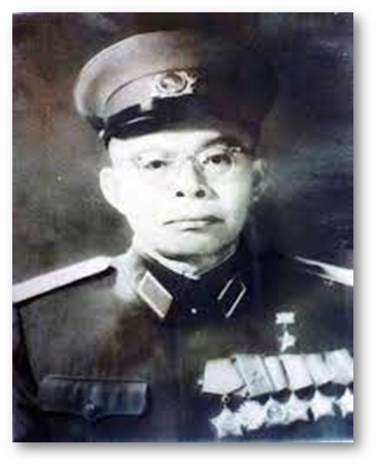
Thiếu tướng, Giáo sư, Viện sĩ, Anh hùng lao động Trần Đại Nghĩa - một người tài ba, đức độ, đã có nhiều đóng góp cho sự nghiệp khoa học kỹ thuật của đất nước.
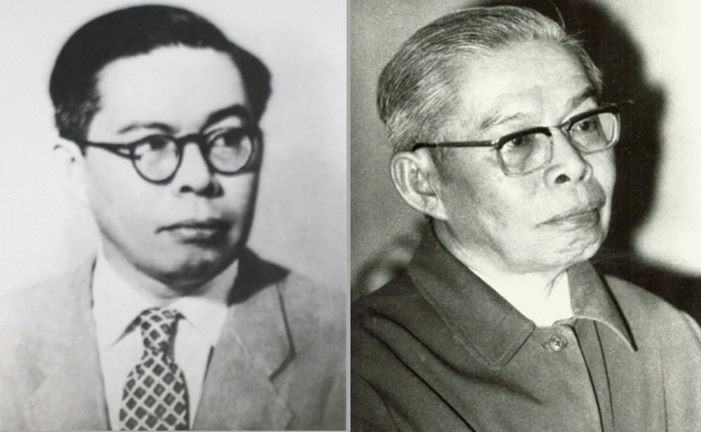
Buồn vui đã trải cuộc vuông tròn.
Rèn tài văn võ thời phiêu bạt
Gánh việc giang san thuở mất còn.
Tình nặng ấy chưng tình đất nước
Nghiệp đời há kể nghiệp vàng son.
Gốc thông đứng thẳng dầu mưa gió
Để gió lành reo ngát nước non”.
Đó là những vần thơ của Giáo sư, Tiến sĩ Khoa học Phan Đình Diệu viết dành riêng tặng nhân dịp lần sinh nhật thứ 70 của cố Thiếu tướng, Giáo sư, Viện sĩ, Anh hùng lao động Trần Đại Nghĩa năm 1987 - người có nhiều đóng góp to lớn trong sự nghiệp đấu tranh giải phóng dân tộc, thống nhất đất nước với vai trò là nhà khoa học lớn của cách mạng Việt Nam, người đặt nền móng cho khoa học và công nghệ nước nhà. Những cống hiến của Giáo sư Trần Đại Nghĩa được khởi nguồn từ lòng yêu nước nồng nàn, hoài bão tuổi trẻ, mà hơn hết chính là tấm long trọn đời vì nghĩa lớn. Nhà bác học của đất nước ta ở thế kỷ XX đã ra đi vĩnh viễn, về với đất mẹ, nhưng ông và những gì mà ông đã để lại cho dân tộc luôn sống mãi trong lòng dân tộc Việt Nam, mãi trường tồn với thời gian. Nhớ đến ông, là gợi nhớ về một kí ức, một con người với hoài bão lớn, mang trong mình một tình yêu lớn, một niềm tin không thể lay chuyển đối với Đảng, đối với Bác Hồ và nhân dân ta.
1. Tiểu sử, cuộc đời, thân thế, sự nghiệp của Thiếu tướng, Giáo sư, Viện sĩ, Anh hùng Lao động Trần Đại Nghĩa.
Trần Đại Nghĩa tên thật là Phạm Quang Lễ, quê nội ở Thủ Dầu Một, tỉnh Bình Dương nhưng ông sinh ra và lớn lên tại quê ngoại, vào ngày 13 tháng 9 năm 1913 trong một gia đình nhà giáo nghèo tại làng Chánh Hiệp, quận Tam Bình, tỉnh Vĩnh Long (nay là xã Hoà Hiệp, huyện Tam Bình, tỉnh Vĩnh Long). Bởi vậy, tuổi thơ của Phạm Quang Lễ gắn liền với dòng sông Măng Thít hiền hoà, bình dị hai bờ bát ngát dừa và cây trái. Mặc dù được sinh ra tại quê ngoại làng Chánh Hiệp, quận Tam Bình (nay là xã Hoà Hiệp, huyện Tam Bình) nhưng từ nhỏ, Phạm Quang Lễ đã cùng gia đình sống tại khu vực gần chợ Vĩnh Long (nay là thành phố Vĩnh Long).
Cha ông là ông giáo Phạm Văn Mùi, vốn là một người uyên bác chữ Hán, nhưng vì vận thời thế thay đổi nên chuyển sang học tiếng Pháp, đã đỗ bằng Thành chung[1], rồi tốt nghiệp Trường Sư phạm, sau đó về dạy lớp nhất, lớp cuối cấp Trường Tiểu học Pháp - Việt, tại thị xã Vĩnh Long. Mẹ của Phạm Quang Lễ là bà Lý Thị Diệu, một người phụ nữ rất nhân hậu, hiền lành và luôn làm việc phúc đức, giúp đỡ người gặp hoàn cảnh khó khăn, trẻ mồ côi, người tàn tật.
Lòng yêu nước của ông sớm được hình thành và nuôi dưỡng bởi truyền thống quê hương Vĩnh Long anh hùng, nơi đã ra những người con ưu tú làm rạng danh quê hương đất nước như câu ca dao:
“Vĩnh long là xứ địa linh
Đất sinh nhân kiệt, người sinh anh hùng”.
Năm Phạm Quang Lễ 7 tuổi thì mồ côi cha, mỗi khi nhớ đến người cha quá cố trái tim ông đau thắt lại bởi lúc lâm chung người cha kính yêu với lời trăng trối: “…phải lo học hành đến nơi đến chốn… phải biết mang hiểu biết của mình giúp ích cho đời”. Điều đó đã hằn sâu trong ông, mang lại ý chí quyết tâm học hành khi mới chỉ là đứa trẻ 7 tuổi. Để em mình có cơ hội được đi học, người chị gái là Phạm Thị Nhẫn đã phải bỏ học ở nhà phụ mẹ, tần tảo nuôi em ăn học. Nhận thấy không có khả năng tìm kế sinh nhai ở chốn thị thành nên mẹ và chị gái quyết định trở về quê làm nghề nông để kiếm tiền lo cho Phạm Quang Lễ ăn học. Một mình Phạm Quang Lễ phải ở lại Vĩnh Long để tiếp tục việc học hành. Mới 7 tuổi đầu, cậu bé vừa phải chịu nỗi đau mất cha, vừa phải chịu cảnh sống xa mẹ, xa chị và tự lập trong mọi hoạt động sinh hoạt, học tập. Có lần, vì quá nhớ mẹ, nhớ chị mà Phạm Quang Lễ đã đi bộ hơn hai mươi cây số dưới trời nắng gắt về nhà với lời phân trần đầy nước mắt: “Má ơi! Con nhớ má, nhớ chị quá, con chỉ định trốn về gặp má, gặp chị một lần thôi rồi mai con sẽ trở lại trường”. Tuy sống trong cuộc sống nghèo khổ, cơ cực và tù túng, nhưng thật hiếm để tìm thấy một người có tinh thần hiếu học như Phạm Quang Lễ.
Đặc biệt, với những biến đổi lớn lao của xã hội Việt Nam dưới ách thống trị của thực dân pháp trong những năm đầu của thế kỷ XX đã đẩy đồng bào ta rơi vào cảnh cơ cực, bần hàn, tủi nhục thậm chí là đi đến bước đường cùng không lối thoát. Năm 12 tuổi, đi học qua cầu Thiền Đức, Phạm Quang Lễ hai lần chứng kiến cảnh người nhảy xuống sông tự tử. Hỏi ra mới biết là do cuộc sống quá cơ cực, đói khổ. Từ đó, ông nuôi chí lớn phải đánh đuổi thực dân Pháp để cho dân mình bớt khổ, muốn vậy phải có chiến lược, chiến thuật và vũ khí. Ở lớp tiểu học, Phạm Quang Lễ học giỏi nhiều môn, đặc biệt là toán, lý, hoá và cơ học. Ông vượt lên mọi hoàn cảnh khó khăn để học thật giỏi và luôn đỗ cao trong các kỳ thi. Điều đó đã chứng tỏ ở ông có một nghị lực và một nguồn sức mạnh vô cùng lớn lao. Từ khi còn nhỏ, cậu học trò dũng cảm Phạm Quang Lễ đã nhận thấy, nhân dân ta rất dũng cảm, kiên cường, nhưng lại do vũ khí sử dụng vẫn chủ yếu là vũ khí thô sơ nên các cuộc nổi dậy bấy giờ đều bị đàn áp một cách dã man của thực dân Pháp và thực sự chưa đạt dược kết quả lớn lao. Trước thực tế lịch sử đó, ông luôn trăn trở, suy nghĩ làm thế nào có được vũ khí có hiệu quả cao để giảm bớt sự hy sinh xương máu của đồng bào?
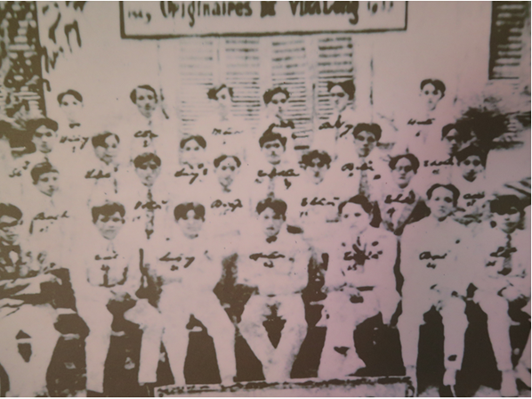
Năm 1926, Phạm Quang Lễ thi đỗ hạng ưu vào trường Trung học đệ nhất cấp Mỹ Tho (nay là trường Nguyễn Đình Chiểu), được nhận học Bổng trong 4 năm học (1926 - 1930). Năm 1930, ông thi đỗ vào Trường Petrus Ký Sài Gòn (nay là trường Chuyên Lê Hồng Phong, Thành phố Hồ Chí Minh) và được nhận học bổng liên tiếp ba năm liền. Bạn cùng học với ông tại trường có Phạm Văn Thiện (tức Phạm Hùng), Huỳnh Tấn Phát, Nguyễn Tấn Gi Trọng… đều là những học sinh xuất sắc của khoá học. Riêng Phạm Quang Lễ được mọi người vinh danh là “thần đồng tuổi trẻ”.
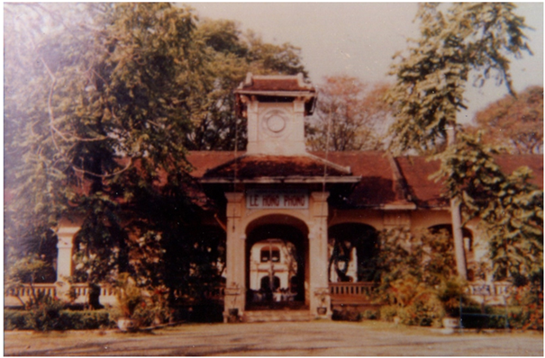
Với nỗ lực vượt bậc, giữa năm 1933, ông xuất sắc đỗ thủ khoa cả hai bằng tú tài: Tú tài Bản xứ và Tú tài Tây – một thành tích phi thường của một chàng trai thanh niên tỉnh lẻ, hoàn cảnh gia đình khó khăn. Để có được thành tích cao như thế, không chỉ đơn thuần là nhờ tư chất thông minh, mà một phần là nhờ sự siêng năng, cần mẫn, sắp xếp thời gian biểu một cách logic, khoa học và hơn hết là ý thức, nghị lực vượt khó vươn lên của Phạm Quang Lễ. Ngoài giờ lên lớp, ông thường ngồi trong phòng nghiền ngẫm các bài học, tự đọc thêm sách để bổ sung và hệ thống lại kiến thức đã học. Riêng đối với môn Toán, Phạm Quang Lễ có một sở thích là nghiên cứu, tìm ra các phương pháp giải khác nhau, đồng thời đặt ra cho mình yêu cầu là với một bài toán thì phải tìm cho được nhiều cách giải, phải đi đến một đáp số đúng, gọn nhất, hay nhất.
Nói về khả năng giải toán của Phạm Quang Lễ, Giáo sư, Bác sĩ Nguyễn Tấn Gi Trọng (bạn học của Phạm Quang Lễ ở Trường Pestrus Ký) kể rằng: “Ở trong lớp không ai nghèo như Lễ, có thể nói là nghèo nhất trường, nhưng cũng không ai học giỏi như Lễ, đặc biệt là môn Toán. Có lần, thầy giáo đang giải một bài toán khó thì bí. Thầy gọi Lễ lên bảng giải tiếp. Lễ lên bảng cứ lặng lẽ viết các cách giải khác nhau mà cậu ta đã say sưa tìm tòi trước đó. Khi ấy, thầy giáo người Pháp vừa ngạc nhiên, vừa cảm phục và nói rằng cậu học sinh này rồi sẽ tiếng xa”.
Không có tiền đi Hà Nội để học tiếp, một phần cũng vì ở Việt Nam hiện không có trường cũng như tài liệu nào dạy về chế tạo vũ khí nên Phạm Quang Lễ quyết định đi làm giúp mẹ, giúp chị và nuôi chí vươn lên, chờ đợi thời cơ. Sau 02 năm đi làm ở Toà sứ Mỹ Tho, Phạm Quang Lễ gặp nhà báo Vương Quang Ngươu, một Việt kiều Pháp yêu nước làm việc ở Toà bố chánh Mỹ Tho. Vương Quang Ngươu biết Phạm Quang Lễ là người có tư chất thông minh hơn người, nên đã vận động Hội Ái hữu trường Chasseloup Laubat (nay là Trường Trung học phổ thông Lê Quý Đôn, Thành phố Hồ Chí Minh), cấp 1 năm học bổng đi du học tại Paris (học bổng này học sinh người Pháp hoặc người Việt có quốc tịch Pháp mới được cấp). Năm 1935, Phạm Quang Lễ với hoài bão và ước mơ của mình xuống tàu tại bến Nhà Rồng bắt đầu xa quê hương, xa mẹ và chị gái, một mình sang Pháp du học.
Nhìn lại thời niên thiếu của Giáo sư, Viện sĩ Trần Đại Nghĩa, tôi chợt nhớ đến câu nói của nhà văn Nguyễn Bá Học: “Đường đi khó, không khó vì ngăn sông cách núi, mà khó vì lòng người ngại núi e sông” và cũng nhớ đến lời Bác Hồ Khuyên thanh niên: “Không có việc gì khó, chỉ sợ lòng không bền, đào núi và lấp biển, quyết chí ắt làm nên”. Tinh thần vượt khó học giỏi và quyết tâm thực hiện hoài bão của Phạm Quang Lễ đã góp phần truyền lửa, động viên, khích lệ cho các thế hệ tuổi trẻ Việt Nam phấn đấu khắc phục khó khăn trong học tập, lao động như mong mỏi của Giáo sư: “Tuổi trẻ phải có hoài bão lớn, hãy cố gắng giữ gìn và phát huy nó”. Cuộc đời và sự nghiệp của Giáo sư, Viện sĩ Trần Đại Nghĩa nói chung, tuổi trẻ của Phạm Quang Lễ nói riêng sẽ mãi là bài học và là tấm gương cho các thế hệ hôm nay và mai sau noi theo.
Theo hồi ức của Giáo sư, Viện sĩ Trần Đại Nghĩa, từ cảng Sài Gòn tới cảng Marseille (Pháp) con tàu phải đi vòng qua nhiều nơi, mất hết 21 ngày, sau khi ghé nhiều nước châu Á, Phi, qua kênh Đào Hồng Hải, kênh Suez, rồi vào Địa Trung Hải. Từ Marseille, Phạm Quang Lễ đến Paris trên một chiếc tàu hoả tốc hành. Vì học bổng của trường Chasseluop Laubat chỉ cấp cho 1 năm, để có đủ tiền cho 2 năm đại học, ông phải nhảy vào học năm thứ hai, ở nhà trọ, tìm sách tự học năm thứ nhất và dồn sức làm 16 tiếng/ngày kiếm tiền trang trải. Quyết chí học rút hai năm làm một, để chỉ 1 năm thôi là đủ điều kiện vào trường Đại học tại Paris.
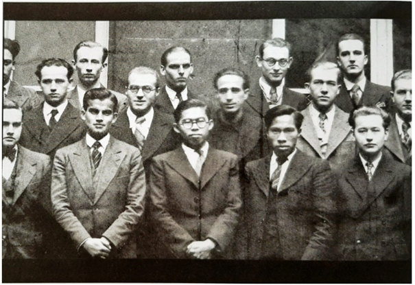
Cuối năm 1936, Phạm Quang Lễ thi đậu vào Trường Đại học quốc gia Cầu đường Paris và tiếp tục được nhận học bổng. Trong thời gian đó, ông còn học thêm một số trường đại học và lần lượt tốt nghiệp kỹ sư và cử nhân các trường: Đại học Điện; Đại học Sorbonne; Đại học quốc gia Cầu đường Paris; Học viện Kỹ thuật Hàng không; đồng thời đạt chứng chỉ Đại học Mỏ và Đại học Bách khoa. Sau khi tốt nghiệp, ông ở lại Pháp và làm việc tại viện nghiên cứu máy bay.
Năm 1942, để có thể thực hành những gì mình đã học Phạm Quang lễ sang đức làm việc trong xưởng chế tạo máy bay Halle ở miền Trung nước Đức và Viện nghiên cứu vũ khí. Đại tá Trần Dũng Triệu, con trai thứ của ông, chia sẻ:
“….Năm 1942, ông sang Đức làm việc trong xưởng chế tạo máy bay và Viện Nghiên cứu vũ khí. Bom bay Vê-oong V1, Vê-đơ V2 từng gây kinh hoàng cho dân Anh - cũng là sản phẩm của Viện ông…”. Kỹ thuật hàng không của Đức lúc bấy giờ là tiến bộ nhất Châu Âu. Mấy tháng sau thấy không phù hợp ông trở lại Paris làm cho Công ty Sud Avion. Chỉ một thời gian ngắn sau thì máy bay quân Đồng minh đã oanh tạc tan tành xưởng máy bay Halle.
Sau khi dự lễ khai giảng của Khóa 1 trường Võ bị Trần Quốc Tuấn, ngày 31/5/1946, Chủ tịch Hồ Chí Minh đến Paris trong hành trình thăm Pháp với tư cách nguyên thủ quốc gia. Trong thời gian này, phái đoàn đàm phán do thủ tướng Phạm Văn Đồng làm trưởng đoàn qua Pháp thương thuyết với Bộ trưởng Bộ Thuộc địa Marius Moutet. Phạm Quang Lễ cùng đông đảo bà con Việt kiều ở Paris ra sân bay Le Bourget đón Cụ Hồ sang thăm theo lời mời của Chính phủ Pháp. Nghe tên Nguyễn Ái Quốc đã lâu nhưng nay ông mới được tận mắt thấy “một cụ già hơi gầy, có bộ râu đen và thưa, trang phục giản dị với bộ ka-ki màu vàng nhạt, trên ngực không đeo huân chương. Đặc điểm hấp dẫn nhất với tôi là Người có đôi mắt sáng, vầng trán rộng, cử chỉ nhanh nhẹn, hoạt bát, luôn chủ động” (ông Lễ ghi trong hồi kí của mình khi vào tuổi 80). Phạm Quang Lễ nhờ ông Hoàng Xuân Mạn (em trai của Giáo sư Hoàng Xuân Hãn) giới thiệu với ông Phạm Văn Đồng trình bày ý nguyện hồi hương cứu quốc. Sau đó Phạm Quang Lễ cùng các Việt kiều yêu nước đã có được cơ hội gặp Bác và bày tỏ nguyện vọng muốn cùng Bác trở về cống hiến cho Tổ quốc, cho dân tộc. Bác hỏi: “Nguyện vọng của chú lúc này là gì?”, Phạm Quang Lễ trả lời rất nhanh: “Kính thưa Cụ, nguyện vọng cao nhất của tôi là được trở về Tổ quốc cống hiến hết năng lực và tinh thần”. Bác nói rõ tình hình trong nước rất khó khăn và bác hỏi có chịu nổi không, ông trả lời “Tôi chịu nổi”. Bác lại hỏi ở bên nhà không có kỹ sư, công nhân vũ khí, máy móc thiếu, liệu có làm được không? Ông đáp chắc như đinh đóng cột “Tôi làm được”.[2]
Cuộc đàm phán ở Hội nghị bị phía Pháp cố tình kéo dài. Ngày 10/9/1946, Bác cho gọi ông Lễ tới thông báo: “Hội nghị Fontainebleau không thành công, Bác sắp về nước. Chú chuẩn bị, vài ngày nữa, chúng ta lên đường. Chú đã sẵn sàng chưa?”. “Thưa Bác, cháu đã sẵn sàng về nước”, ông Lễ trả lời. Lúc đó, ông đang làm việc tại xưởng sản xuất máy bay, chỉ cần viết đơn xin nghỉ việc.
Hơn chục năm học và làm việc tại Pháp (1935-46), ông âm thầm say mê nghiên cứu chế tạo vũ khí. Bằng quan hệ và khả năng của mình, ông bí mật gom góp hơn 3 vạn trang tài liệu về vũ khí và công nghệ. Hơn 1 tấn tài liệu được đóng gói, dán nhãn “ngoại giao” theo ông về nước. Ông đã từ bỏ Paris với cuộc sống giàu sang phú quý đi cùng Bác Hồ trở về nước tham gia hoạt động Cách mạng, sẵn sàng chịu đựng những khó khăn, vất vả, hy sinh gian khổ để hoà mình vào cuộc kháng chiến của dân tộc với tâm nguyện suốt đời phụng sự Tổ quốc, phục vụ nhân dân.
Tháp tùng Bác trên Thông báo hạm quân sự Dumont d’Urville theo đường biển về nước còn có nhà tư sản Đỗ Đình Thiện - thư kí riêng của Bác, đại tá cận vệ Vũ Đình Huỳnh cùng 4 Việt kiều (Kỹ sư đúc - luyện kim Võ Quý Huân, Bác sĩ Trần Hữu Tước, Kỹ sư mỏ Võ Đình Quỳnh và ông Lễ).
Ngày 19/9/1946, tầu rời cảng Toulon. Sau Hội nghị Fontainebleau, quan hệ Việt - Pháp trở nên rất căng thẳng, ai cũng lo chuyến đi lênh đênh trên biển dài ngày, lỡ ở nhà xảy ra chiến tranh thì cả đoàn rơi vào cảnh “cá chậu, chim lồng”. Nhưng riêng Bác vẫn tỏ ra bình thản. Người bàn bạc với các thành viên, thống nhất cách thức sinh hoạt, nghỉ ngơi, đọc sách báo, giữ nếp sống trật tự cho chuyến đi. Khi tàu vào Địa Trung Hải, phía Pháp cho 150 binh lính, sĩ quan trên tầu “tập trận”. Còi báo động rú lên, sàn tầu rung chuyển rồi súng pháo nổ ầm ỹ, khói đạn mù trời... Phía Pháp có ý uy hiếp đoàn. Nhưng Bác vẫn tỉnh táo giữ thái độ như không có gì xảy ra. Từ thế mạnh áp đảo, nhưng do ta khéo léo trong ứng xử giao tiếp làm họ phải thay đổi thái độ. Cũng có tập trận lần 2 cho phải phép. Theo đề nghị của Bác, thông báo hạm dừng tại 4 điểm: Kênh đào Suez, Ceyland (nam Ấn Độ), Nha Trang và ngoài khơi Hải Phòng. Tại đó, chỉ Bác cùng thư kí và cận vệ được phép lên bờ.
Chuyến đi dài ngày là dịp may hiếm có được sống gần Bác, một môi trường thuận lợi để ông Phạm Quang Lễ chuẩn bị đầy đủ kiến thức, kinh nghiệm trước khi bước vào cuộc đời mới. Gần 3 tháng gần Người, ông Lễ như được qua một lớp huấn luyện mà nội dung rất sinh động, được đúc kết từ tinh hoa, truyền thống dân tộc, từ các đạo lí, cả của phương Đông và phương Tây, một phương pháp luận khoa học...
Ngày 20/10/1946, tầu cập Cảng Hải Phòng. Ra đón tiếp đoàn cùng nhân dân Hải Phòng và đại diện Pháp còn có ông Phạm Văn Đồng (rời Paris sau nhưng về bằng máy bay), ông Võ Nguyên Giáp... Vị Tổng tư lệnh xúc động ôm ông Lễ trong vòng tay, ghé tai: “Ở nhà nghe tin anh về với Bác mừng lắm!”. Còn ông thì cảm động: “Cảm ơn anh! Tôi mới về nước, chưa làm được gì. Các anh ở nhà chắc vất vả lắm?”.
Nhận thấy rằng, trong khói lửa chiến tranh, vũ khí là niềm tin, là động lực và là phương tiện không thể thiếu của biết bao chiến sĩ ở chiến trường. Vì vậy, ông luôn mong muốn tạo ra thật nhiều vũ khí có hoả lực mạnh để cung cấp cho quân và dân ta. Dù khó khăn, vất vả, thiếu thốn cả về nhân lực và vật lực, tài lực cộng với môi trường làm việc nguy hiểm nhưng ông vẫn không làm ông nản lòng, chùn bước mà trái lại, ông càng làm việc hăng say để cống hiến.
Ngày 5/12/1946, ông được Chính phủ Việt Nam dân chủ cộng hoà giao nhiệm vụ làm Cục trưởng Cục Quân giới và vinh dự được Bác đặt tên là Trần Đại Nghĩa. Bác nói “Việc của chú làm đây là việc đại nghĩa, vì thế từ nay Bác đặt tên cho chú là Trần Đại Nghĩa. Dùng bí danh này để giữ bí mật cho chú và để bảo vệ gia đình, bà con chú còn ở trong Nam”.
Bác giải thích ý nghĩa cái tên: “Một là họ Trần, là họ của danh tướng Trần Hưng Đạo. Hai là, Đại Nghĩa là nghĩa lớn để chú nhớ đến nhiệm vụ của mình với nhân dân, với đất nước. Đại nghĩa còn là chữ của Nguyễn Trãi trong Bình Ngô đại cáo. Chú có ưng bí danh đó không?” Từ đó cái tên Trần Đại Nghĩa đã gắn với ông trọn đời.
Ngày 19 tháng 12 năm 1946, kháng chiến toàn quốc bùng nổ, ông lên chiến khu Việt Bắc trực tiếp chỉ đạo sản xuất các loại vũ khí như: Lựu đạn, súng phóng lựu, mìn phá xe, Bazooka,… đã đóng góp rất nhiều cho các thắng lợi lớn của ta trong cuộc kháng chiến chống Pháp.
Năm 1947, Trần Đại Nghĩa được chỉ định làm Cục trưởng Cục Pháo binh, kiêm Cục trưởng Cục Quân giới. Năm 1948, ông được phong quân hàm Thiếu tướng trong đợt đầu tiên, trở thành một trong 11 vị tướng đầu tiên của Quân đội nhân dân Việt Nam[3]. Năm 1949, ông được kết nạp vào Đảng Cộng sản Đông Dương. Năm 1952, ông được tặng Huân chương Anh hùng lao động trở thành một trong số ba Anh hùng Lao động đầu tiên của nước ta.
Sau khi cuộc kháng chiến chống Pháp thắng lợi, ông được giao nhiệm vụ lần lượt giữ các chức vụ: Thứ trưởng Bộ Công nghiệp kiêm Hiệu trưởng Trường Đại học chuyên nghiệp Bách Khoa nay là trường Đại học Bách khoa Hà Nội (năm 1956); Thứ trưởng Bộ Công nghiệp nặng (năm 1960); Phó Chủ nhiệm Ủy ban kiến thiết cơ bản Nhà nước (năm 1963); Chủ nhiệm Ủy ban kiến thiết cơ bản Nhà nước kiêm Ủy ban Khoa học kỹ thuật nhà nước (năm 1965), Đại biểu Quốc hội khoá II. Với những cống hiến và thành tích xuất sắc về khoa học của mình, đầu năm 1966, ông được bầu làm Viện sĩ Viện Hàn lâm Khoa học Liên xô, cũng thời gian này theo sự chỉ đạo của Chính phủ và Chủ tịch Hồ Chí Minh, ông đảm nhiệm chức vụ Phó Chủ nhiệm Tổng cục Hậu cần, phụ trách về kỹ thuật quốc phòng. Thời gian này ông đã lãnh đạo cán bộ kỹ thuật cải tiến nâng tầm bắn của tên lửa Sam II (do Liên xô sản xuất), tiêu diệt được siêu pháo đài bay B52 của Mỹ trên bầu trời Hà nội bằng chính những tên lửa Sam II của Liên xô. Đồng thời tiếp tục làm Chủ nhiệm Ủy ban Kiến thiết cơ bản Nhà nước và Ủy ban Khoa học và Kỹ thuật Nhà nước, Đại biểu Quốc hội khoá III.
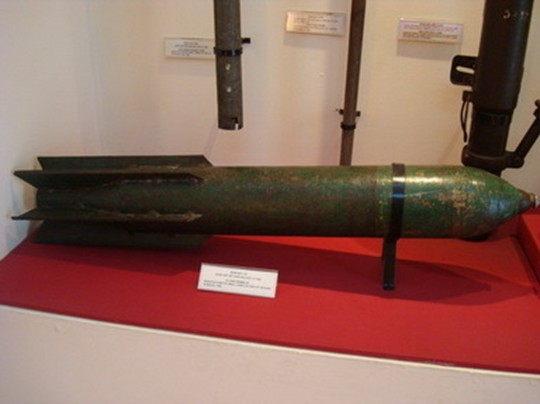
Kể một chút về đời tư của Thiếu tướng, Giáo sư, Viện sĩ, Anh hùng lao động Trần Đại Nghĩa. Theo lời kể của Bà Nguyễn Thị Khánh - người bạn đời của Trần Đại Nghĩa bâng khuâng nhớ lại những ngày làm Quân y tại Cục Quân giới do “cụ Nghĩa” làm cục trưởng. Cô y tá xinh đẹp ngày ấy tuy có nghe về tài năng của sếp mình, nhưng trong mắt cô “cụ ta” là một người lùi xùi, quần áo lôi thôi, không có gì “bắt mắt” lại lớn hơn cô cả con giáp. Hồi đó Cục Quân giới đóng trên đồi, phía dưới là trường Lục Quân của ông Hoàng Đạo Thuý. Để chống quân Pháp nhảy dù, Trần Đại Nghĩa hiến kế là cắm cọc nhọn ở xung quanh. Không ngờ có lần chính Cục trưởng Nghĩa lại va trúng cọc và người chăm sóc là cô Khánh.
Bà Khánh nhớ, đến một hôm người chị cùng đơn vị bảo Khánh: “Hình như ông Nghĩa để ý mày đấy”. Mọi người vun vào, rồi chuyện gì đến cũng phải đến, một lễ cưới đơn sơ được tổ chức trong chiến khu. Bà Khánh kể rằng: “Ông Cục phó Xuân có bảo anh Nghĩa là viết thư báo tin vui cho Cụ Hồ và tướng Giáp để kiếm ít quà làm đám cưới. Nhưng anh Nghĩa gạt đi, nói “Người ta bận trăm công nghìn việc, chuyện nhỏ chớ quấy rầy”. Tiệc đãi khách là những trái măng cụt do Cục trưởng Nghĩa vét túi đi mua. Khách mời phải góp tiền lại để nấu một bữa cơm liên hoan.
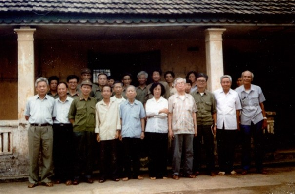
Trong chiến khu, do điều kiện sống khó khăn, đứa con đầu lòng của hai người qua đời vì thiếu sữa, đứa con thứ 2 đẻ rơi khi người mẹ phải chạy di tản 15km trong đường rừng…
“Ôi, cụ Nghĩa nhà ta lơ đễnh là số một!”, bà Khánh cười thật tươi khi nói về những ngày trong chiến khu Việt Bắc gần lán Bác Hồ, Tướng Giáp. Bà kể “Đầu có lúc nào cũng súng với đạn, chẳng quan tâm gì xung quanh, cả tuần không tắm, giày thì để cóc ở, quần áo thì tơi tả. Có lần đi tắm suối quá nửa ngày chưa thấy về, anh em bủa đi tìm thì thấy cụ Nghĩa ta đang ngồi trên tảng đá viết những công thức ngoằn nghèo. Nhờ giữ con thì khi về thấy mặt mũi tèm lem còn ba thì mải mê đọc sách…” Có lần Bác Hồ phải kêu lên “Thím Nghĩa đâu mà để chú Nghĩa ra nông nỗi này?”.
Ngày 30 tháng 4 năm 1975, Miền Nam hoàn toàn giải phóng, Giáo sư đã ghi trong nhật ký của mình: “Nhiệm vụ của tôi đã hoàn thành, vì hoài bão của tôi hồi nhỏ, sứ mệnh của tôi rất đơn giản là tham gia về mặt khoa học, kỹ thuật vũ khí trong cuộc đấu tranh cách mạng giải phóng đất nước, và nay đất nước đã được giải phóng, tôi không muốn gì hơn nữa, vì một đời người không thể làm hơn”. Ông có ý định nghỉ hưu. Thế nhưng, tiếp tục chấp hành sự phân công của Chính phủ, mà hơn hết vẫn là tinh thần trách nhiệm phụng sự quê hương, Tổ quốc của mình, Giáo sư Trần Đại Nghĩa tiếp tục nhận giữ chức vụ Viện trưởng Viện Khoa học Việt Nam - nay là Viện Hàn lâm Khoa học Việt Nam, định hướng, hình thành và phát triển các ngành khoa học của Viện, từ đội ngũ cán bộ đến cơ sở vật chất, từng bước khẳng định được vai trò và vị trí của Viện trong và ngoài nước.
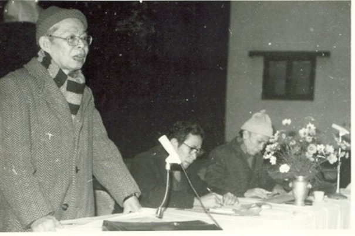
Dù hoạt động trong nhiều lĩnh vực với các cương vị, chức vụ khác nhau, dù ở bất cứ nơi đâu hay trong bất kỳ hoàn cảnh nào, Thiếu tướng, Giáo sư, Viện sĩ, Anh hùng lao động Trần Đại Nghĩa cũng luôn toàn tâm, toàn ý phục vụ nhân dân, phụng sự Tổ quốc.
Sau những năm tháng cống hiến cho đất nước, Giáo sư, Viện sĩ Trần Đại Nghĩa nghỉ hưu và sinh sống tại số nhà 56 Hàng Chuối, Hà Nội. Năm 1991 ông chuyển vào sống tại quận Tân Bình, Thành phố Hồ Chí Minh.
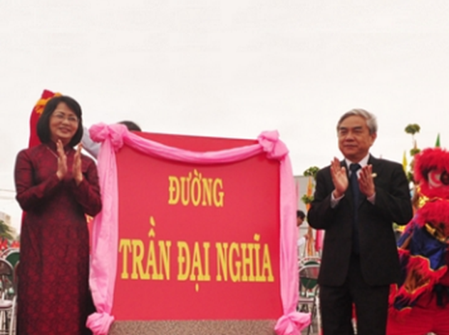
Ngày 09 tháng 8 năm 1997 tại bệnh viện Thống Nhất, Thành phố Hồ Chí Minh, trong những giây phút cuối cùng của cuộc đời, Giáo sư, Viện sĩ, Anh hùng lao động Trần Đại Nghĩa, giữa những người thân, bà Khánh, vợ ông hỏi: “Nghĩa vụ của ông với đất nước đã hoàn thành. Con cháu tề tựu đông đủ. Các cháu học giỏi và ngoan. Ông đã yên lòng chưa?” Với nét mặt thanh thản, ông nhìn bà trìu mến, khẽ gật đầu mãn nguyện và trút hơi thở cuối cùng vào lúc 16 giờ 20 phút, hưởng thọ 84 tuổi.
Trần Đại Nghĩa là một nhà khoa học, nhà quân sự, nhà giáo dục, nhà hoạt động cách mạng Việt Nam xuất sắc. Ông có công lớn trong việc xây dựng và phát triển quân đội và khoa học kỹ thuật Việt Nam. Ông là một tấm gương sáng về tinh thần yêu nước, cống hiến cho sự nghiệp cách mạng của dân tộc Việt Nam. Trong suốt cuộc đời của mình, Thiếu tướng, Giáo sư, Viện sĩ, Anh hùng lao động Trần Đại Nghĩa đã cống hiến trọn vẹn cho khoa học và trên hết là cho Tổ quốc, cho tất cả dân tộc Việt Nam. Nhà vật lý Nguyễn Văn Hiệu từng nói: “Đối với thế hệ chúng ta, công lao và đạo đức của nhà khoa học ấy đã đi vào lịch sử như một thiên thần thoại truyền kỳ”. Đại tướng Võ Nguyên Giáp thì gọi ông là: “ông Phật chế tạo vũ khí”.
Sau khi ông mất, tên của Thiếu tướng, Giáo sư, Viện sĩ, Anh hùng lao động Trần Đại Nghĩa đã được đặt cho ba con đường ở ba thành phố lớn nhất cả nước là Thủ đô Hà Nội, Thành phố Hồ Chí Minh và Thành phố Đà Nẵng… một số trường đại học và trường trung học phổ thông trên cả nước.
Ngày 10 tháng 10 năm 2010, Tổng công ty đóng tàu Sông Thu - Tổng cục Công nghiệp Quốc phòng cũng đã hạ thuỷ tàu khảo sát đầu tiên của Việt Nam có ký hiệu HSV 6613 mang tên Trần Đại Nghĩa sau hơn 2 năm lắp đóng. Năm 2013, Uỷ ban nhân dân tỉnh Vĩnh Long tổ chức khởi công xây dựng Khu lưu niệm Giáo sư - Viện sĩ Trần Đại Nghĩa tại ấp Mỹ Phú 1, xã Tường Lộc, huyện Tam Bình, tỉnh Vĩnh Long…
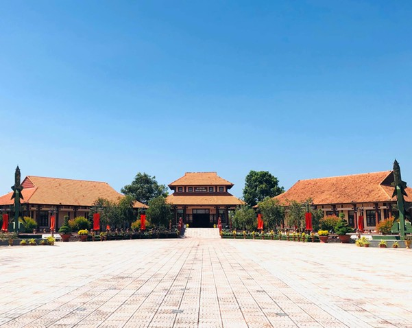
[1] Bằng cấp cho người thi đỗ hết cấp cao đẳng tiểu học thời Pháp thuộc, tương đương với bằng tốt nghiệp trung học cơ sở ngày nay.
[2] Theo lời kể của bà Nguyễn Thị Khánh - người bạn đời của cố Giáo sư, Viện sĩ Trần Đại Nghĩa.
[3] Cùng với Trần Đại Nghĩa, còn có đồng chí Võ Nguyên Giáp được phong Đại tướng, Nguyễn Bình được phong Trung tướng, Nguyễn Sơn, Văn Tiến Dũng, Trần Tử Bình, Lê Thiết Hùng, Chu Văn Tấn, Hoàng Văn Thái, Hoàng Sâm, Lê Tiến Mai được phong thiếu tướng.
PHẦN 2: VAI TRÒ VÀ ĐÓNG GÓP CHO NGÀNH QUÂN GIỚI
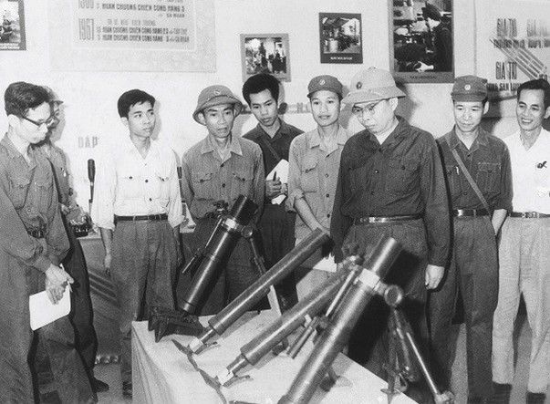
Năm 1946, Chủ tịch Hồ Chí Minh sang thăm Pháp và tham dự Hội nghị Fontainebleau. Thời gian ở Pháp, với đức độ, sự hấp dẫn diệu kỳ và sự cảm hoá đặc biệt của mình, Chủ tịch Hồ Chí Minh đã thu hút đông đảo Việt kiều tại Pháp nói chung và người trí thức nói riêng tình nguyện theo về nước phục vụ Tổ quốc. Trong số đó đã có người sau này trở thành nhà khoa học lớn, có những đóng góp quan trọng cho công cuộc kháng chiến kiến quốc, người thầy đầu tiên của ngành quân giới Việt Nam, đó là Thiếu tướng, Giáo sư, Viện sĩ, Anh hùng lao động Trần Đại Nghĩa.
Suốt 11 năm ở Pháp (từ 1935 đến 1946), Phạm Quang Lễ luôn theo đuổi mục tiêu là học cách chế tạo vũ khí của phương Tây. Nhưng điều đó là vô cùng khó khăn bởi vì người Pháp không bao giờ chịu dạy những bí mật về vũ khí cho người dân một nước thuộc địa, kể cả khi họ đã mang quốc tịch Pháp. Do vậy, trong 11 năm ấy Phạm Quang lễ phải tự mò mẫm, tự học âm thầm và bí mật hoàn toàn. Sau khi hoàn thành công việc học tập của mình, Phạm Quang Lễ đi làm tại các cơ sở sản xuất máy bay ở Pháp; xưởng sản xuất máy bay và viện vũ khí ở Đức để tiếp tục tích luỹ thêm những kinh nghiệm thực hành. Tháng 5/1946, khi Chủ tịch Hồ Chí Minh đến Paris, trong đoàn đại biểu Việt kiều ra đón người tại sân bay, Phạm Quang Lễ đã lần đầu được diện kiến Bác và có cơ hội bày tỏ nguyện vọng cùng bác trở về để cống hiến cho Tổ quốc, cho dân tộc mình. Rời thủ đô Paris hoa lệ, Phạm Quang Lễ trở về Tổ quốc mang theo tâm nguyện phụng sự đất nước.
Sau khi trở về Tổ quốc, Chủ tịch Hồ Chí Minh trực tiếp giao nhiệm vụ cho Phạm Quang Lễ lên Thái Nguyên cùng với cán bộ và công nhân xưởng Giang Tiên tiến hành nghiên cứu, chế tạo hoàn chỉnh súng và đạn Bazooka - một loại vũ khí mới dùng để tiêu diệt xe tăng lúc bấy giờ. Ngay khi được giao nhiệm vụ ông cùng các đồng đội đã làm việc miệt mài, nhiều đêm quên ăn, quên ngủ.
Trước yêu cầu của cuộc kháng chiến chống Pháp gay go, ác liệt. Ngày 05-12-1946, Chủ tịch Hồ Chí Minh mời Phạm Quang Lễ đến Bắc Bộ Phủ. Người thân mật nói: “Kháng chiến sắp đến nơi rồi, hôm nay tôi gọi chú đến để trao cho chú nhiệm vụ làm Cục trưởng Cục Quân giới. Chú lo vũ khí cho bộ đội diệt giặc”[4]. Để giữ bí mật cho gia đình, bà con ở trong miền Nam và để nhắc nhở nhiệm vụ vô cùng quan trọng, Bác đã đặt tên cho Phạm Quang Lễ là Trần Đại Nghĩa. Vậy là, từ đây cái tên Trần Đại Nghĩa gắn liền với cuộc đời ông. Có thể nói, trong những tháng ngày miệt mài nghiên cứu tại Chiến khu Việt Bắc là thời gian kỹ sư Trần Đại Nghĩa cảm thấy có ý nghĩa nhất trong cuộc đời hoạt động cách mạng của mình. Sau ngày, có dịp hồi tưởng lại, ông vẫn thường nhắc lại tình cảm sâu sắc mà Chủ tịch Hồ Chí Minh dành cho mình, nhắc lại ngày 05-12 lịch sử, ngày mà ông được giao nhiệm vụ Cục trưởng Cục Quân giới và được người đặt cho cái tên Trần Đại Nghĩa.
Đảm nhiệm chức Cục trưởng Cục Quân giới trong điều kiện Cuộc kháng chiến chống thực dân Pháp bùng nổ là một thử thách không nhỏ đối với Trần Đại Nghĩa. Tuy nhiên, với vốn kiến thức tích luỹ được trong thời gian học tập ở nước ngoài, cộng với sự thông minh, trí sáng tạo, ông đã nhanh chóng bắt tay vào trực tiếp nghiên cứu sản xuất vũ khí phục vụ cuộc chiên đấu của quân và dân ta.
Ngay sau ngày Toàn quốc kháng chiến 19/12/1946, việc nghiên cứu, hoàn chỉnh súng, đạn Bazooka lại được tiếp tục với tinh thần khẩn trương hơn. sắt thép vụn, đường ray xe lửa được chuyển về các lò luyện gang Quân giới (do ông Võ Quý Huân thiết kế, xây dựng phù hợp hoàn cảnh VN), chế tạo những khẩu Bazooka. Dưới sự chỉ đạo và hướng dẫn trực tiếp của Trần Đại Nghĩa cùng sự miệt mài cố gắng của các cán bộ Cục Quân giới, những nỗ lực, cố gắng của ông và đồng đội cuối cùng cũng được đền đáp, cuối tháng 2-1947 đạn Bazooka đã được thử nghiệm thành công với sức nổ xuyên tương đương với đạn Bazooka do Mỹ chế tạo. Ngay sau Tết Đinh Hợi, ngày 03 tháng 3 năm 1947 đã trở thành một mốc son của ngành Quân giới Việt Nam trong việc chế tạo khí tài, khi đạn Bazooka góp phần bẻ gãy cuộc tấn công của địch ở vùng Chương Mỹ, Quốc Oai (Hà Tây cũ). Trong chiến dịch Thu Đông năm 1947, Bazooka còn bắn chìm cả tàu chiến của Pháp trên sông Lô.
Thực hiện chủ trương của Trung ương Đảng, tháng 9-1948, Hội nghị chuyên môn quân giới toàn quốc lần thứ Nhất được tổ chức dưới sự chủ trì của ông Trần Đại Nghĩa. Sau 18 ngày làm việc khẩn trương, Hội nghị đã giải quyết nhiều vấn đề trước mắt cũng như lâu dài trong việc đảm bảo vũ khí cho kháng chiến. Hội nghị đã mở ra hướng giải quyết nhiều vấn đề quan trọng trong việc sản xuất vũ khí như: Tiêu chuẩn hoá, tổ chức quản lý sản xuất, lập giá thành sản phẩm và tiêu chuẩn kỹ thuật vũ khí, kiên quyết loại bỏ những vũ khí chế tạo tốn kém, sử dụng không bảo đảm an toàn…
Sau Hội nghị, Trần Đại Nghĩa chỉ đạo biên soạn và phát hành Quy tắc sử dụng và bảo quản vũ khí, Xạ thuật thường thức. Đây là những tài liệu về binh khí kỹ thuật đầu tiên của quân đội ta. Những tài liệu này sau đó được phổ biến rộng rãi trong toàn quân. Tiếp sau đó, Trần Đại Nghĩa chỉ đạo Nha Nghiên cứu kỹ thuật biên soạn nhiều tài liệu hướng dẫn cách tháo gỡ các ngòi nổ trong bom, mìn, đạn pháo và những loại vũ khí mới xuất hiện của địch để các đơn vị, địa phương kịp thời đối phó.
Từ các mặt trận, thư của chiến sĩ gửi về Cục Quân giới tới tấp. Những người lính trực tiếp chiến đấu đã có nhiều phản hồi giúp kỹ sư hoàn thiện hơn loại vũ khí này. Súng Bazooka đã trở thành nỗi kinh hoàng của kẻ địch, nhưng vẫn còn rất hạn chế, chẳng hạn như tầm bắn chưa tốt nếu bắn xa hơn 100m thì sức phá sẽ kém đi…
Cuộc kháng chiến của ta ngày càng trở nên ác liệt, ngoài Bazooka, chiến trường còn cần nhiều thêm những vũ khí hạng nặng, có sức công phá lớn hơn. Với cương vị là Cục trưởng Cục Quân giới được Chủ tịch Hồ Chí Minh giao nhiệm vụ “lo vũ khí cho bộ đội đánh giặc”, Trần Đại Nghĩa lại ngày đêm trăn trở, nghiên cứu tìm ra một loại vũ khí mới, có uy lực hơn, phục vụ đắc lực hơn cho chiến trường. Trong những năm tháng gian khổ ấy, ta chưa có dàn phóng đạn Cachiusa nên ông Nghĩa chỉ mơ ước làm sao chế tạo cho được loại súng mà bộ đội ta có thể vác vai nhưng có sức công phá ngang cỗ đại bác nặng 6 tấn. Ông đã cùng các kỹ sư Hoàng Đình Phu, Bùi Minh Tiêu, Nguyễn Trinh Tiếp, Phạm Đồng Điện, Nguyễn Văn Hường... nghiên cứu loại vũ khí tương đương của Mỹ dùng tấn công lên đảo Okinawa (Nhật Bản).
Với quyết tâm sản xuất bằng được vũ khí mới phục vụ cho bộ đội đánh công kiên, Trần Đại Nghĩa đã cùng với các cộng sự phải từng bước nghiên cứu, lập lại các công việc mà người Mỹ đã hoàn thành. Sau gần 07 tháng miệt mài tính toán, nghiên cứu chế tạo, đến cuối năm 1949, súng SKZ (súng không giật) được hoàn thành và tổ chức bắn thử tại Thành cổ Tuyên Quang. Kết quả đạn nổ tốt, phá huỷ tường gạch dày hàng mét. Súng SKZ là loại súng không giật, rất nhẹ (chỉ 20kg), đầu đạn lõm cỡ 160mm, có sức công phá mạnh, dùng để bắn vào những pháo đài, lô cốt kiên cố của địch, đầu đạn xuyên thủng các bức tường lô cốt dày 600-1.000mm… Đây là dòng vũ khí hiện đại, mới xuất hiện lần đầu trong trận quân Mỹ đổ bộ lên đảo Okinawa của Nhật Bản hồi cuối chiến tranh thế giới thứ hai. Như vậy việc nghiên cứu chế tạo súng SKZ đã thành công. SKZ được ra đời đã kịp thời phục vụ cho chiến thuật đánh công kiên của bộ đội ta trên chiến trường. Chỉ sau SKZ của Mỹ mấy năm, vào năm 1950, SKZ do ta tự sản xuất được sử dụng lần đầu trong trận Phố Lu, tại chiến trường Nam Trung Bộ, trong một đêm, với loại súng không giật này ta đã loại bỏ 05 đồn giặc. Địch hoảng sợ tháo chạy khỏi hàng loạt đồn bốt khác.
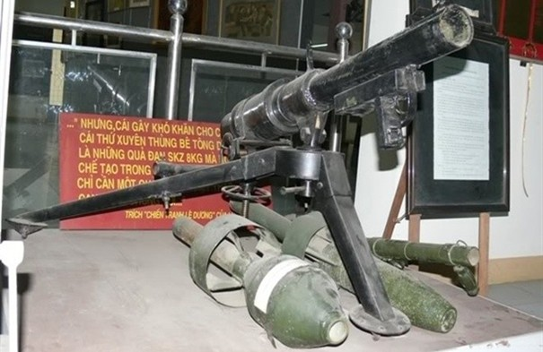
Sau này, trong cuốn sách Chiến tranh Đông Dương tác giả Lucian Bodart đã viết: “Cái thứ gây khó khăn cho chúng tôi, cái thứ xuyên thủng bê tông dày 60cm là những quả đạn SKZ. Chỉ cần vài quả thôi là đã tiêu diệt được lô cốt của chúng tôi”. Trong chiến dịch Điện Biên Phủ, Cục Quân giới chuyển vào chiến trường 10 khẩu SKZ và 100 quả đạn. Số súng này được sử dụng rất nhiều để góp phần giúp các chiến sĩ tiêu tiệt các lô cốt, công sự của địch. Để có thể đánh đòn chí mạng vào các điểm co cụm của địch, Trần Đại Nghĩa tiếp tục nghiên cứu và chế tạo thành công loại bom bay tương tự loại V1, V2 của Đức. Bom bay được cấp tốc đưa đến các vùng chiến sự khốc liệt, góp phần làm nên những thắng lợi quan trọng của quân và dân ta trong cuộc kháng chiến chống thực dân Pháp xâm lược.
Ghi nhận những đóng góp to lớn và những thành tích xuất sắc trong lĩnh vực nghiên cứu, chế tạo vũ khí, năm 1948, Trần Đại Nghĩa được Chủ tịch Hồ Chí Minh ký sắc lệnh phong quân hàm Thiếu tướng và là một trong những vị tướng đầu tiên của quân đội ta, khi ấy Trần Đại Nghĩa mới 35 tuổi. Từ khi còn là một kỹ sư trẻ theo Bác Hồ về nước phục vụ kháng chiến, đến nay đã trở thành đã trở thành một trong những tướng lĩnh đầu tiên của quân đội là một niềm vinh dự lớn lao đối với Thiếu tướng Trần Đại Nghĩa.
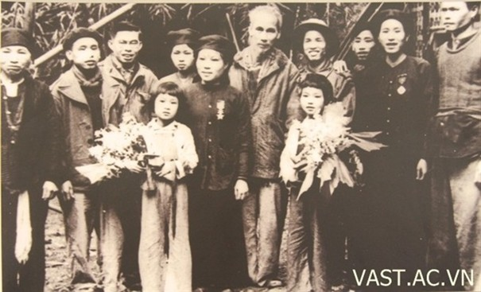
Năm 1952, tại Đại hội Chiến sĩ thi đua và cán bộ gương mẫu toàn quốc lần thứ nhất, ông được phong tặng danh hiệu Anh hùng lao động, là một trong ba Anh hùng lao động đầu tiên của nước ta. Sau khi miền Bắc hoàn toàn giải phóng, ông được điều chuyển ra công tác ngoài quân đội.
Năm 1966, trong lúc cuộc kháng chiến chống Mỹ, cứu nước của ta gặp nhiều khó khăn, vấn đề về vũ khí, đạn dược, ông lại được gọi trở vào quân đội tiếp tục phục vụ cuộc kháng chiến với chức vụ Phó Chủ nhiệm Tổng cục Hậu cần phụ trách về kỹ thuật. Cũng trong năm 1966, ông được bầu làm Viện sĩ nước ngoài của Viện Hàn lâm khoa học Liên Xô - danh vị cao nhất của những người làm công tác nghiên cứu khoa học.
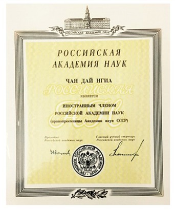
Trần Đại Nghĩa trở lại quân đội trong giai đoạn cuộc kháng chiến chống Mỹ, cứu nước của dân tộc ta đang bước vào giai đoạn ác liệt, ta phải đối đầu với những loại vũ khí, phương tiện chiến tranh hiện đại và phức tạp của Mỹ, tình hình chiến trường, chiến lược, chiến thuật của ta cũng có những điểm khác trước. Do đó, việc có thêm những loại vũ khí mới cho phù hợp với những hình thức chiến thuật mới là rất cần thiết. Bằng sự tận tuỵ và nhiệt huyết của mình, Trần Đại Nghĩa đã vận dụng tất cả những kinh nghiệm quý báu đã tích luỹ được từ trước đến nay vào nghiên cứu các loại vũ khí mới, cải tiến các loại vũ khí được viện trợ từ bên ngoài nhằm phát huy hiệu quả cao nhất trong mỗi trận đánh, đồng thời cũng phải tìm tòi, nghiên cứu các loại vũ khí, khí tài của địch để ta xây dựng chiến thuật và cách đánh sao cho phù hợp.
Năm 1965, sau khi chiến lược “Chiến tranh đặc biệt” của kẻ địch thất bại ngay lập tức chúng triển khai chiến lược “Chiến tranh cục bộ” để thay thế, đặc điểm của chiến lược này là sử dụng hết các ưu thế của chúng về hoả lực, công nghệ và quân số của lực lượng quân viễn chinh Mỹ…Năm 1965 - 1966, đế quốc Mỹ bắt đầu đánh phá đường 559 bằng nhiều loại vũ khí đa dạng như: Bom bi, bom laze, bom từ trường, với nhiều loại máy bay ném bom có sức huỷ diệt lớn, trong đó phải kể đến pháo đài bay B52. Với B52 có tầm bay rất cao, các loại vũ khí của ta không thể bắn tới được. Các đơn vị như Cục Quân giới, Viện Kỹ thuật quân sự, các quân chủng, binh chủng đều phải nghiên cứu về các loại vũ khí mới này của đối phương. Nhận định về các loại vũ khí mới của Mỹ, Trần Đại Nghĩa cho rằng: Vũ khí dù có hiện đại đến mấy đi chăng nữa vẫn có nhược điểm và đó là. Ta cần nghiên cứu, phát hiện và khoét sâu vào những nhược điểm đó là biện pháp đối phó tích cực nhất. Với những nhận định sắc bén đó, ta đã nghiên cứu cải tiến các loại vũ khí, khí tài, đồng thời khai thác tối đa nhược điểm vũ khí của địch như tìm cách khắc phục thủ đoạn gây nhiễu của địch để điều khiển SAM II (do Liên xô sản xuất), đồng thời cải tiến nâng tầm bắn của loại tên lửa này bắn hạ nhiều “siêu pháo đài bay” B52 của Mỹ tháng 12 - 1972, góp phần làm nên một “Hà Nội, Điện Biên Phủ trên không” buộc Mỹ phải xuống thang chiến tranh chấp nhận ngồi vào bàn đàm phán ký kết Hiệp định Pari về chấm dứt chiến tranh lập lại hoà bình ở Việt Nam.
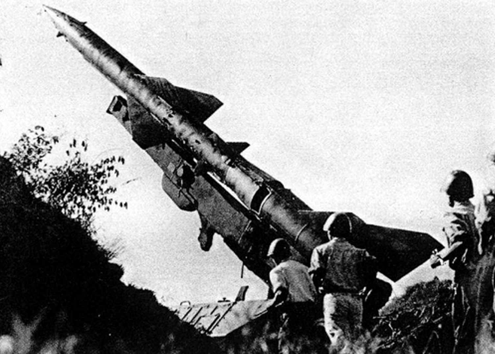
Sau ngày miền Nam được hoàn toàn giải phóng, Trần Đại Nghĩa đã ghi vào sổ tay mình: Nhiệm vụ Bác giao cho chúng tôi và tập thể các nhà khoa học Việt Nam là tham gia về mặt vũ khí và khoa học quân sự trong hai cuộc kháng chiến cứu nước đã được hoàn thành. Khi Viện Khoa học Việt Nam được thành lập, ông tiếp tục được giao trọng trách giữ vững chức vụ Viện trưởng đầu tiên của Viện Khoa học Việt Nam.
Thiếu tướng, Giáo sư, Viện sĩ, Anh hùng lao động Trần Đại Nghĩa là một Nhà lãnh đạo tài năng của ngành Quân giới Việt Nam (nay là ngành Công nghiệp quốc phòng Việt Nam). Ông đã có nhiều đóng góp quan trọng trong việc phát triển công nghiệp quốc phòng Việt Nam, góp phần nâng cao sức mạnh quốc phòng của đất nước. Những đóng góp của ông đối với ngành Quân giới Việt Nam là vô cung to lớn. Ông đã góp phần quan trọng vào việc trang bị vũ khí, khí tài cho quân đội, nâng cao sức mạnh chiến đấu của quân đội và góp phần quan trọng vào việc trang bị vũ khí, khí tài cho quân đội, nâng cao năng lực, sức mạnh chiến đấu của quân đội và góp phần quan trọng vào các thắng lợi của quân và dân ta trong hai cuộc kháng chiến chống thực dân Pháp và đế quốc Mỹ để bảo vệ độc lập, chủ quyền, thống nhất và toàn vẹn lãnh thổ của ta. Ông là một tấm gương sáng về tinh thần yêu nước, cống hiến cho sự nghiệp cách mạng của dân tộc Việt Nam.
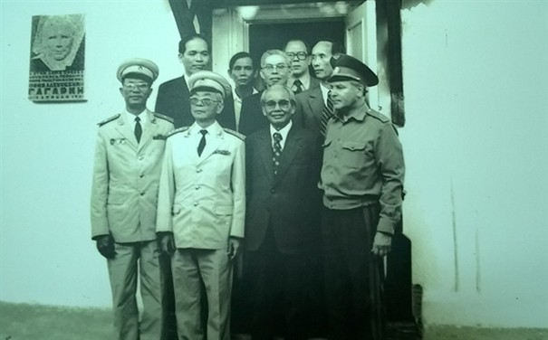
Dù trên cương vị nào, Thiếu tướng, Giáo sư, Viện sĩ, Anh hùng lao động Trần Đại Nghĩa cũng đem hết tâm huyết trí tuệ và sức lực của mình cống hiến cho Tổ quốc và hoàn thành xuất sắc mọi trọng trách được giao. Là một trí thức trẻ du học và công tác ở châu Âu nhiều năm, ông luôn mang trong mình tinh thần hết lòng phụng sự Tổ quốc, phục vụ kháng chiến. Nằm trong đoàn trí thức trẻ theo Chủ tịch Hồ Chí Minh về nước phục vụ kháng chiến, Trần Đại Nghĩa đã có công rất lớn trong việc đặt những “viên gạch” đầu tiên xây dựng “nền móng” cho ngành Quân giới Việt Nam trong những năm đầu kháng chiến và làm tiền đề để tiếp tục phát triển ngày càng trưởng thành, lớn mạnh của ngành Kỹ thuật quân sự, Công nghiệp quốc phòng Quân đội nhân dân Việt Nam hôm nay và mai sau.
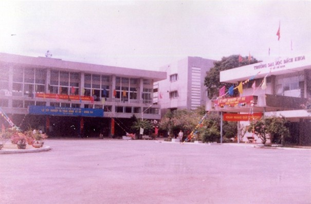
[4] Nguyễn Văn Đạo: Viện sĩ Trần Đại Nghĩa, Sđd, tr.139.